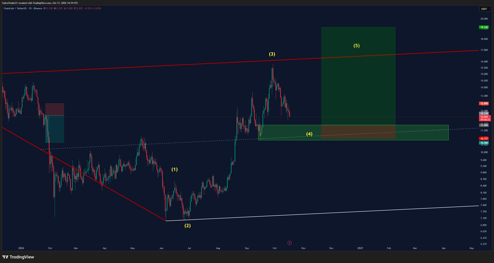
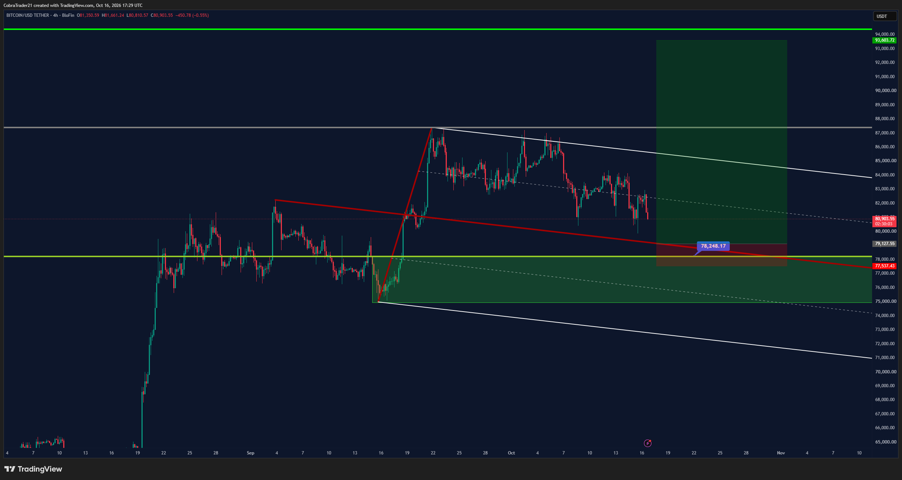
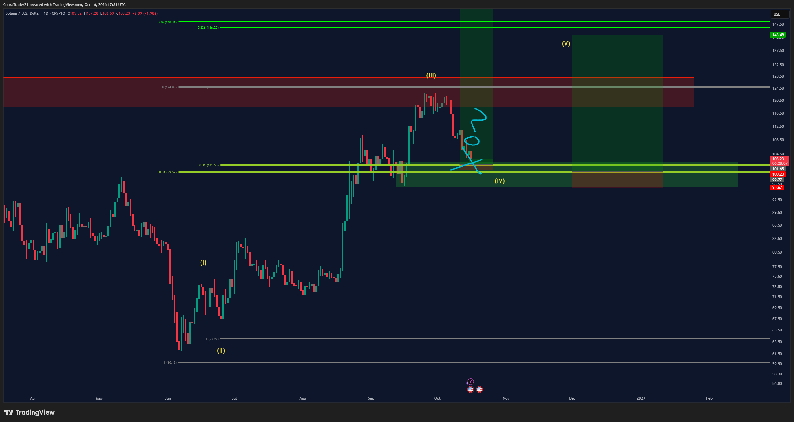

Trades VIP do Cobra. A cor da bolinha no nome do canal mostra o estado do trade.
NOVO canal 🟠link criado hoje às 11:19: só "New setup brewing" + gráfico 1D (ChainLink/USDT, Binance). Nenhum número no texto: entrada ≈11,509, stop ≈10,737 e alvo ≈19,156 foram lidos das caixas do TradingView. O gráfico mostra a entrada na zona verde da onda (4), mirando a onda (5). LINK ~12,02, entrada ~4% abaixo. Stop ~6,7% abaixo da entrada. LINK não está no watchlist do relatório diário, então não há leitura do Market Cipher B dele aqui: conferir o 4h, o 12h e o 1D antes, pela regra do tempo gráfico maior.
Canal 🟠btc-long, sem post novo desde 16/10 14:38 (só recado da Blofin). Entrada ≈79.128 (lida do gráfico), SL 77.537, TP 93.604. BTC ~81,55k, entrada ~3% abaixo; mínima desde ontem ≈80,8k, não acionou. Long contra o 12h e o 1D (Baixa ✓ no fechamento de 16/10): pela regra do relatório, o tempo maior manda.
Canal 🟠sol-long-2, sem post novo. Re-entrada só SE o long atual (🟢solana, stop 101,37) estopar. ENTRY 99,77 / SL 95,67 / TP1 105,7. SOL ~104,2, entrada ~4,3% abaixo. Contra o 12h e o 1D.
Sem post novo desde 16/10 08:18 (10% de lucro na zona de oferta). Stop na entrada (2.317), TP1 2.415 já batido, alvo restante 2.852. ETH ~2.424, acima da entrada. Long contra o 12h e o 1D.
Sem post novo desde 15/10 12:06. Stop na entrada (101,37), TP1 110,7 ainda não bateu. SOL ~104,2; mínima das últimas 24h 102,49, não estopou. Long contra o 12h e o 1D.
Sem post novo desde 16/10 12:50 ("Wow" + gráfico com TP ≈0,0408 na ferramenta, sem número no texto). Já tirou 2 parciais de 10%. Stop 0,03332. Sem par spot na Binance (Gate.io ≈0,0356; mínima 24h 0,03503, acima do stop).
Encerrado 14/10 (saiu na mão). O alerta antigo COBRA BTC long 82.085 perdeu o sentido.
Sem mudança desde 04/10. A favor do 12h e do 1D, mas longe (~8% acima; BTC ~81,55k).
Sem mudança desde 21/09. A favor do 12h e do 1D, longe.
Ordem antiga (13/08), sem atualização.
Sem atualização desde 17/09. Continua 🟢.
Sem canal APT em VIP-trades e sem menção nova. APT ≈0,807 na Binance.
Sem mudança desde 05/09. O canal agora aparece numa categoria chamada "Ethereum" na barra lateral, ainda 🟠. Preço ~0,71, muito abaixo da entrada.
Sem mudança desde 25/09; canal também movido para a categoria "Ethereum", ainda 🟠. Adaśko hoje (09:41) só postou fluxos de ETF e Fear & Greed: "sem atualização de gráficos, suportes e resistências anteriores seguem valendo".
BTC perpétuo na Bybit. Valores com ≈ foram lidos do gráfico.
Nenhum post no canal desde 15/10 12:22 (checado hoje às 12h). Entrada 80.250,1 confirmada no print (0,6229 BTC ≈ US$50k); em 15/10 11:10 adicionou um pouco, mas tamanho e média nova NÃO foram postados. Stop/alvo ≈ do gráfico. BTC ~81,55k. Long contra o 12h e o 1D.
Sem atualização. Sem níveis numéricos.
Plano antigo; sem novo post.
Sem novo post. BTC ~81,6k está perto dessa faixa, mas ele já está no long de 80.250.
Zona onde ele entrou (80.250).
Front-runado; sem mudança.
Sem mudança. A favor do 12h e do 1D. Longe.
Sem mudança. A favor do tempo gráfico maior.
Histórico; encerrado em 12/10.

Cobra, 17/10 11:19: LINK long (1D) — entrada ≈11,509, stop ≈10,737, alvo ≈19,156.

Cobra, 16/10 14:30: BTC long swing — entrada ≈79.128, SL 77.537, TP 93.604.

Cobra, 16/10 14:32: SOL long 2 — entrada 99,77, SL 95,67 (se o long atual estopar).